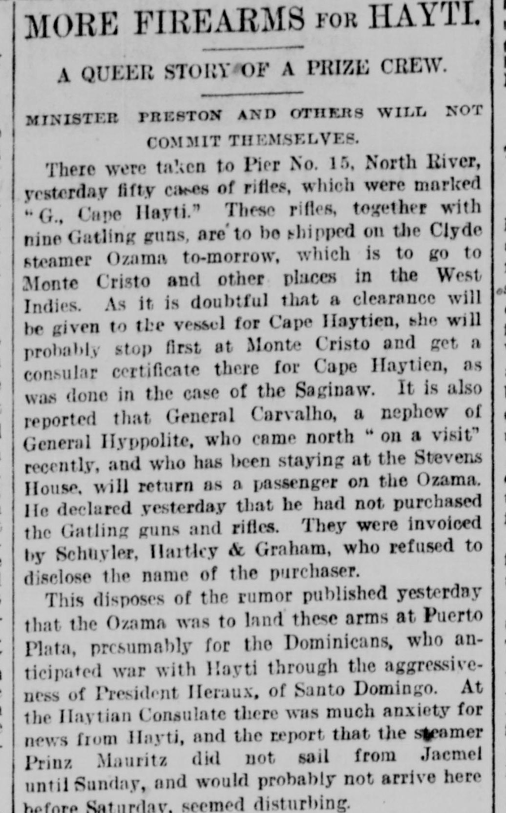

Article in transcriptionArtículo en transcripción
New-York Tribune. New York [N.Y.], December 28, 1888. Page 2. Published by New York Tribune. A daily newspaper, 1866–1924.New-York Tribune. New York [N.Y.], 28 de diciembre de 1888. Página 2. Publicado por New York Tribune. Periódico diario, 1866–1924. View the originalVer el original

This article is being transcribed again from the original newspaper page. It is not available to read in the meantime; it will return as soon as the new transcription is ready.Este artículo se está transcribiendo de nuevo desde la página original del periódico. Mientras tanto no está disponible para su lectura; volverá en cuanto la nueva transcripción esté lista.
FULL TEXT:TEXTO COMPLETO:
New-York Tribune December 28, 188828 de diciembre de 1888
Original in English.Original en inglés.
MORE FIREARMS FOR HAYTI.
A QUEER STORY OF A PRIZE CREW.
MINISTER PRESTON AND OTHERS WILL NOT COMMIT THEMSELVES.
There were taken to Pier No. 15, North River, yesterday fifty cases of rifles, which were marked "G., Cape Hayti." These rifles, together with nine Gatling guns, are to be shipped on the Clyde steamer Ozama to-morrow, which is to go to Monte Cristo and other places in the West Indies. As it is doubtful that a clearance will be given to the vessel for Cape Haytien, she will probably stop first at Monte Cristo and get a consular certificate there for Cape Haytien, as was done in the case of the Saginaw. It is also reported that General Carvalho, a nephew of General Hyppolite, who came north "on a visit" recently, and who has been staying at the Stevens House, will return as a passenger on the Ozama. He declared yesterday that he had not purchased the Gatling guns and rifles. They were invoiced by Schuyler, Hartley & Graham, who refused to disclose the name of the purchaser.
This disposes of the rumor published yesterday that the Ozama was to land these arms at Puerto Plata, presumably for the Dominicans, who anticipated war with Hayti through the aggressiveness of President Heraux, of Santo Domingo. At the Haytian Consulate there was much anxiety for news from Hayti, and the report that the steamer Prinz Mauritz did not sail from Jacmel until Sunday, and would probably not arrive here before Saturday, seemed disturbing.
A story was published yesterday, on the authority of Lieutenant E. W. Deering, a passenger on the steamer Alene, respecting the alleged sending by Pim, Forwood & Co., agents of the Atlas Line, acting in concert with Minister Preston, of a crew of twenty-five picked men to Hayti on the Alene on December 8, for the purpose of taking possession of the steamer Haytien Republic, thus removing the provocation to war and preventing the bombardment of Port-au-Prince by the Yantic and Galena. This crew was headed by Captain Henry Williams, it is said, an ex-English naval officer, and was well supplied with firearms and ammunition. Captain Williams received sealed orders, which were not opened until the ship was two days out. On opening the package he found a letter from Pim, Forwood & Co., informing him of the nature of his mission, as well as giving him further orders and papers signed by Minister Preston and Consul Bassett.
Harold Forwood, agent of the Atlas Line, was seen by a Tribune reporter at his office, No. 26 State-st., last evening. He admitted that he knew of the embarkation of the twenty-five sailors, but would not admit that he knew the nature of their mission. The reporter then showed Mr. Forwood the published letter to Captain Williams, giving that officer instructions as to what he should do when he arrived at Hayti, and bearing the firm's signature.
"Was that letter written by you or with your authority?" asked the reporter.
"I decline to say," replied Mr. Forwood.
"Will you say that the letter was not written by you?"
"I will not—that is, I decline to say whether we wrote it or not."
"Did you know anything of the orders given to Mr. Williams by Minister Preston?"
"I decline to say whether I did or did not. One thing I can tell you I have had no communication with our Government on the point."
"Have you communicated with Minister Preston?"
"There again I must decline to reply," said Mr. Forword, smiling. "See Minister Preston and then I may be able to answer you more explicitly."
Minister Preston arrived from Washington late last night, and took rooms at the Westminster Hotel, where he was seen by a Tribune reporter. When asked about the matter he answered: "I always send letters to my Government, but, of course, I cannot tell you their contents. I cannot answer this. This is the first that I have heard of this phase of the question. In answer to the published statement that the United States demands $2,000,000 from Hayti as indemnity for the seizure of the vessel, I will let your own good sense tell whether it is true or not. I have heard nothing in Washington regarding the matter."
In the same story comment was also made upon the object of the coming to New-York of General Contreras. It intimated that the public had been misled into believing that the little general was here on private business only. The Tribune has repeatedly called attention to the fact that General Contreras had ingratiated himself into the confidence of President Legitime and was in this country as his direct representative in the purchase of supplies and war-weapons; and that he was the supervisor of the detectives employed to track the footsteps of General Hyppolite's representatives. It has also repeatedly published facts connected with his inspection of different kinds of rifles, carbines, and revolvers, and has described the small arsenal which his corner of the Consulate frequently represents. Hence, there can be no mistaking the fact that he is here on "official" and not "private" business.